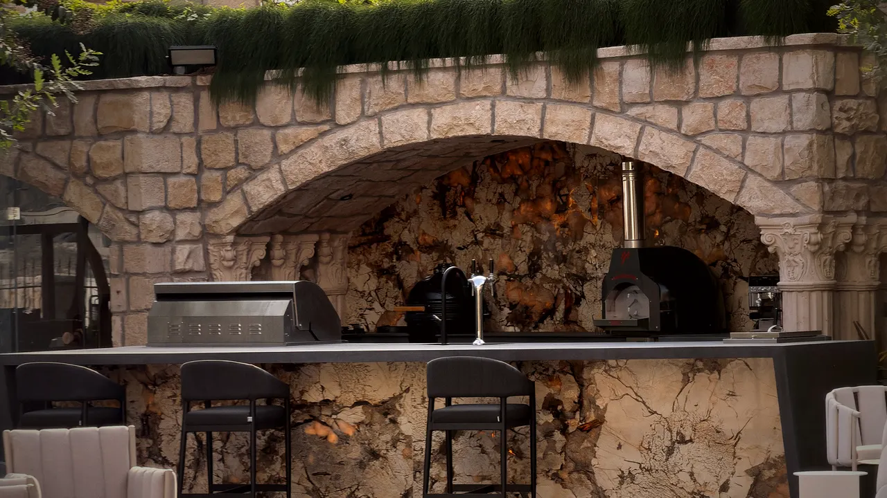
הערב הכי טוב בבית קורה בחוץ.
עסק משפחתי עם מפעל משלנו. מתכננים לחצר שלך, מייצרים אצלנו ומתקינים בעצמנו.
במה אנחנו מתמחים?
כל מטבח מתוכנן לשטח שיש לך. אלה כמה מהמטבחים שבנינו, מהקטן לגדול.

מרפסתקיר אחד: מקרר, כיור וגריל, מתחת לפרגולה. 
גגמטבח לבן בפינה, עם טאבון ומשטח לאורך המעקה. 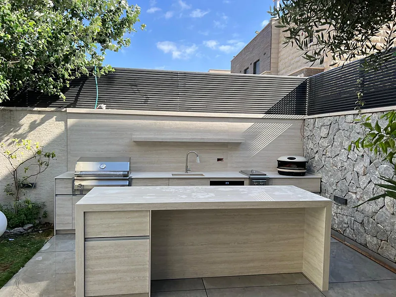
דירת גןקיר עבודה ואי מולו, ליד קיר אבן. 
פנטהאוזגריל וטאבון בפינה, ומשטח ארוך שממשיך ממנה. 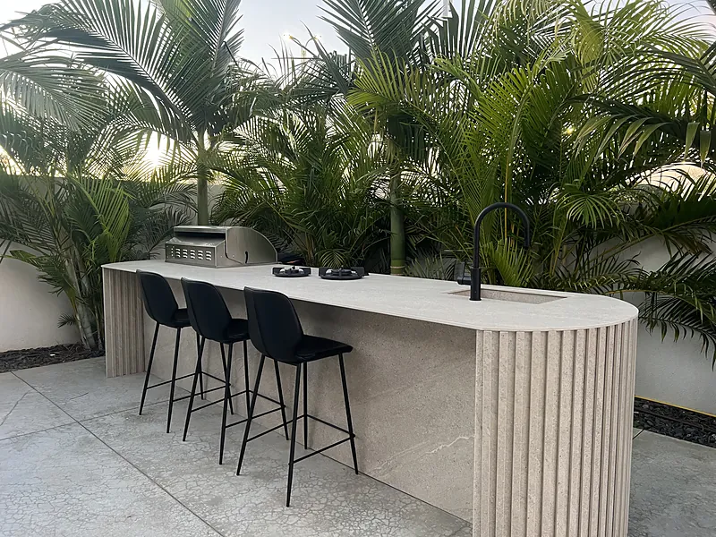
בית פרטיאי אחד עם קצה מעוגל, ומקום לשבת לכל האורך. 
בית עם בריכהמטבח אפור מתחת לגגון, על שפת הבריכה. 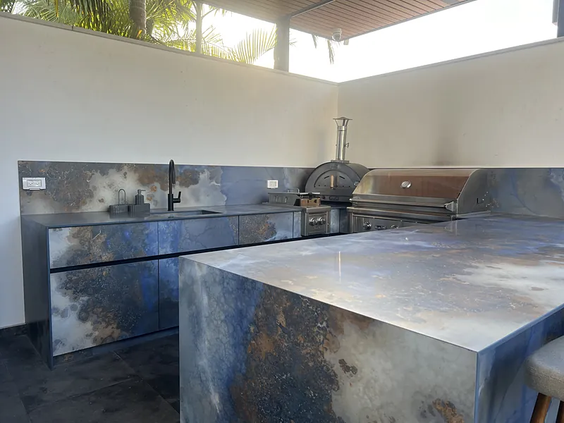
בית פרטי גדולאבן כחולה על כל המשטחים, עד הרצפה. 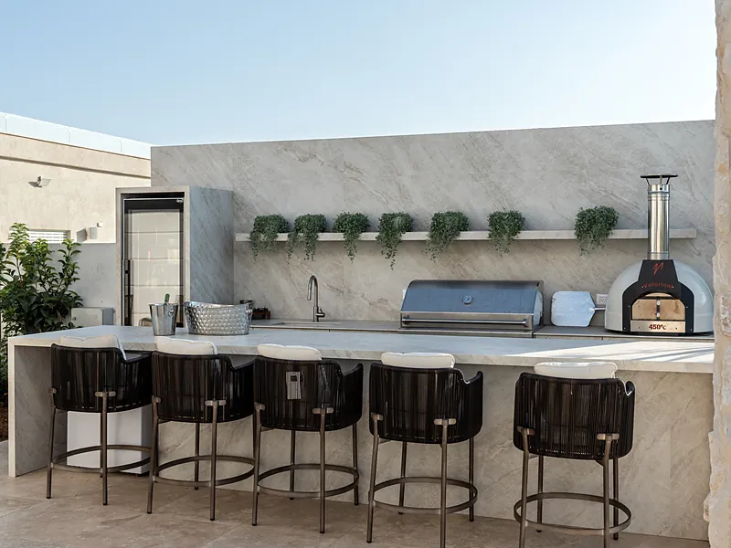
וילהקיר אבן לכל האורך, גריל, טאבון וחמישה כיסאות.
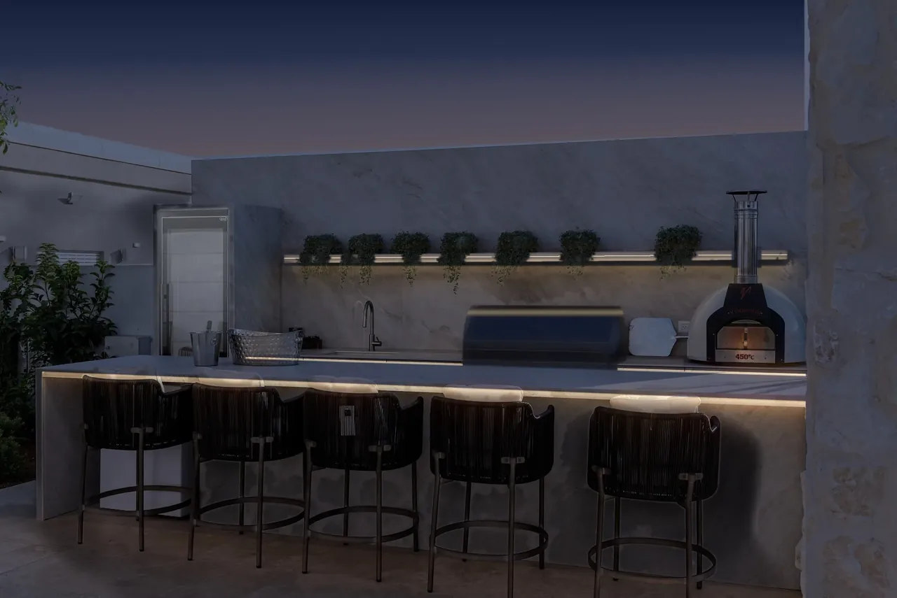


מהשרטוט ועד האש.
-

התכנון
הכל מתחיל ליד שולחן אחד. אתה מספר למעצב איך נראה אצלך יום שישי, כמה אנשים מגיעים בחג ולאיזה צד שוקעת השמש, והוא משרטט. איפה יעמוד הגריל, איפה הטאבון, ואיפה יישבו כולם.
בונה או משפץ? כדאי לשבת איתנו מוקדם, כשכל אפשרות בחצר עוד פתוחה.
-
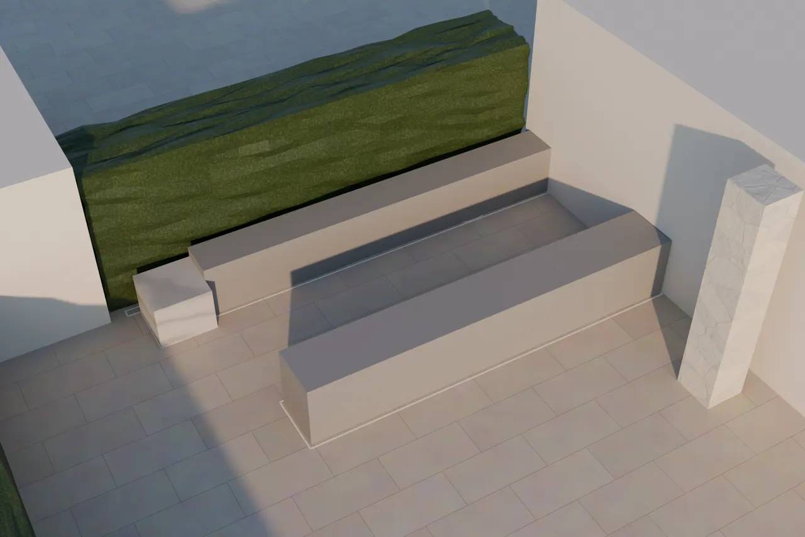
הייצור
אחרי מדידה בשטח ואישור סופי, התוכנית יורדת לייצור במפעל שלנו. הארון, החזית והשיש נבנים אצלנו, לפי המידות של החצר שלך.
-
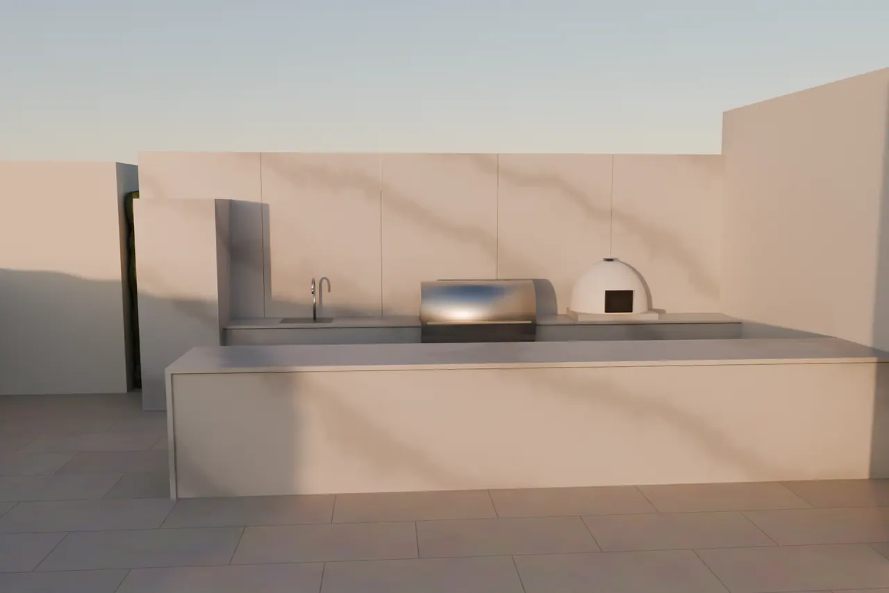
ההתקנה
צוות ההתקנה שלנו מגיע ומרכיב את המטבח במקום, חלק אחרי חלק.
-
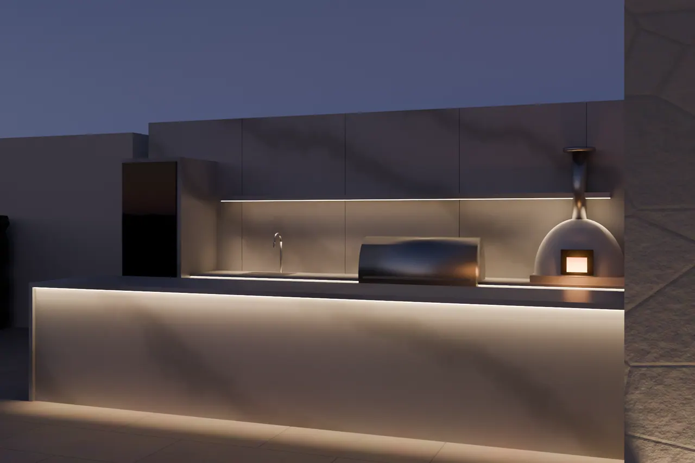
הערב הראשון
כשהם מסיימים, נשאר רק להדליק את האש.
וזה המטבח עצמו.
צילום, לא הדמיה. באיזו שעה תשב בו?
עכשיו תורך.
לקבוע פגישת תכנון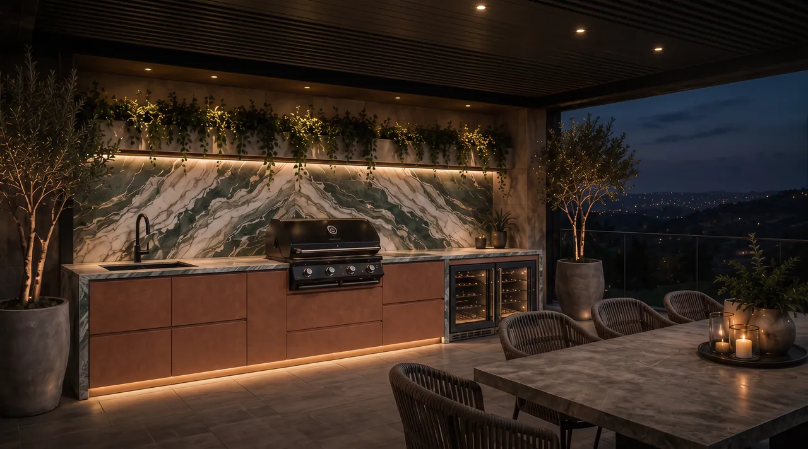


ככה זה נראה מהכיסא שלך.
השרטוט
אתה מספר איך נראה אצלך ערב בחוץ, והמעצב משרטט את זה מולך, קו אחרי קו.
הצורה
איפה הגריל, איפה הכיור, כמה יושבים סביב השולחן. כל דבר עומד איפה שבחרת.
החומרים
האבן, גוון הארונות, הגריל והצמחייה. אתה בוחר, ואנחנו דואגים שהכל יתחבר.
הערב הראשון
האורות נדלקים, השולחן ערוך, והמטבח שבחרת עומד אצלך בחצר.
נסה בעצמך: איזו אבן?
את האבן עצמה בוחרים מול הדוגמאות, בפגישת התכנון.


מי אנחנו
הכל התחיל בפרנה שבחצר של סבתא, ובחגים שכל המשפחה עשתה סביבה. היום יש לנו מפעל, גן תצוגה בברכיה וסניף בהרצליה, ועדיין כל מטבח אנחנו מתכננים, מייצרים ומתקינים בעצמנו.
לסיפור שלנואדריכלים ומעצבים
אנחנו עובדים לפי התוכנית שלך, ומתאימים כל פרט לחומרים ולקווים של הבית. ונשמח לארח אותך אצלנו, בברכיה או בהרצליה.
לעמוד האדריכלים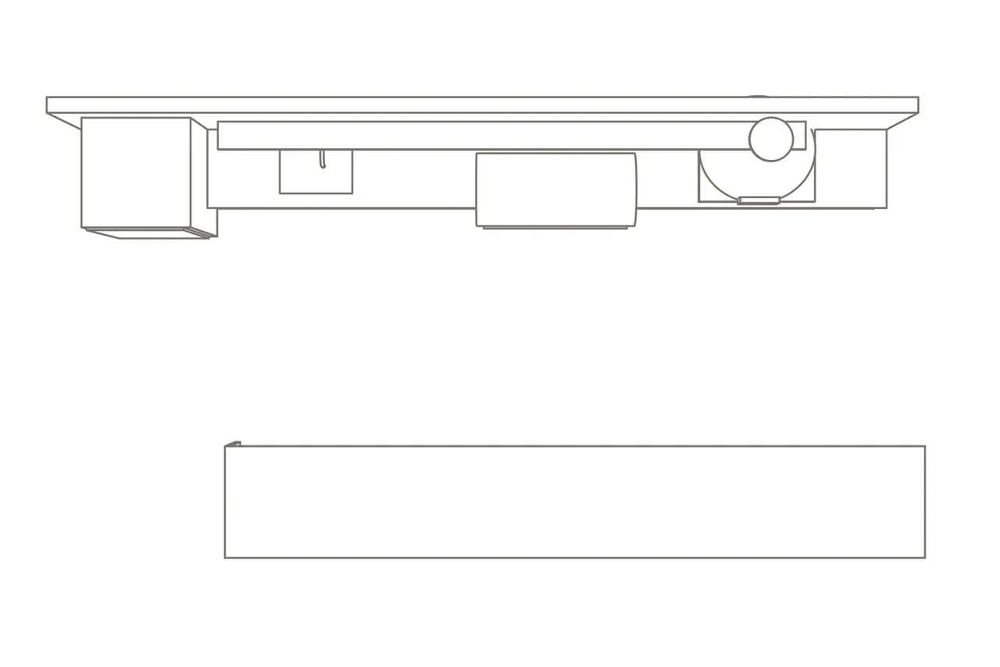
עוד פרויקטים
ספר לנו על הבית.
ארבע שאלות קצרות, ונחזור אליך.
ברכיה
גן התצוגה, משק 20, מושב ברכיה
הרצליה
הסניף שלנו במרכז